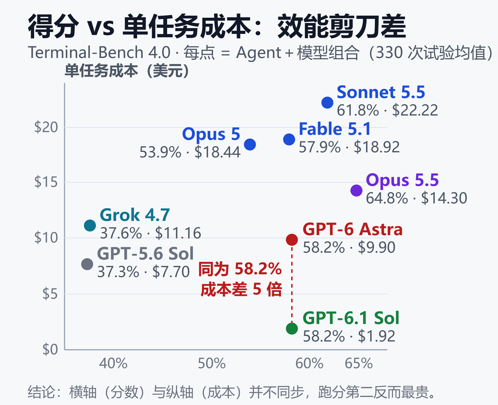

跑分第一最贵，跑分第四最便宜：AI 编程 Agent 的效能剪刀差
2026 年 10 月 8 日查看的 Terminal-Bench 4.0 榜单上，有一组数字格外刺眼：Codex + GPT-6.1 Sol 和 Codex + GPT-6 Astra 跑出完全相同的 58.2%，但前者解决一个任务只要 1.92 美元，后者要 9.90 美元——5 倍价差，一分分数都没多买。
更反直觉的是：跑分冠军 Claude Code + Opus 5.5（64.8%）每题 14.30 美元，而第二名 Claude Code + Sonnet 5.5（61.8%）每题反而更贵，22.22 美元。分数与价格早已不是"越强越贵"的线性关系——这就是 AI 编程 Agent 的效能剪刀差。
一、旧基准已死：这张榜为什么来得正是时候
2026 年夏天，两大老牌编程基准接连失灵。
Terminal-Bench 2.1 已经饱和：九个模型齐刷刷挤在 87%–92% 区间，谁也拉不开差距。SWE-bench Verified 的结局更彻底——评测平台 Vals.ai 在 9 月 1 日将它归档，理由是 97.0% 的天花板已无法区分前沿模型。
OpenAI 官方发文承认更难堪的事实：对 138 道"模型死活做不出来"的题逐个人工审计，59.4% 存在测试缺陷；且受测的全部前沿模型都能逐字复现参考答案，说明训练时"见过题"。分数提升越来越像刷题量比拼。OpenAI 因此停止报告 SWE-bench Verified，甚至撤回了此前对 SWE-bench Pro 的推荐（自估约 30% 任务有缺陷）。
旧标尺集体失灵之际，Terminal-Bench 4.0 于 8 月 28 日上线，规则明显更硬：
- 66 个硬任务，横跨软件、机器学习、科学、运维、安全、硬件、媒体七个领域
- 每个"Agent + 模型"组合跑 330 次试验，同时公布总 Token 与美元成本
- 单任务 8 小时超时，自适应上调内存与 CPU，移除 8 个已饱和任务
它测的不是裸模型，而是整套系统在真实终端里把活干完的能力——而且是第一张同时公布分数和账单的权威榜单。
需要提醒的是：由于任务集与资源规则做了破坏性调整，4.0 的成绩不能与 2.x、3.0 的历史分数直接对比。榜单上每一个数字，只在 4.0 这一把新尺子内部有意义。
二、榜单：分数与价格的剪刀差
先看 tbench.ai 的核心数据（每条 330 次试验，成本 = 总花费 ÷ 330；榜单页总花费以"千美元"取整显示，单任务成本为据此换算的近似值）：
| 名次 | 组合（Agent + 模型） | 得分（±95% 置信区间） | 总 Token | 总花费 | 单任务成本 |
|---|---|---|---|---|---|
| 1 | Claude Code + Opus 5.5 | 64.8% ± 3.1% | 80 亿 | 约 4.7k 美元 | 14.30 美元 |
| 2 | Claude Code + Sonnet 5.5 | 61.8% ± 2.9% | 194 亿 | 约 7.3k 美元 | 22.22 美元 |
| 3 | Codex + GPT-6 Astra | 58.2% ± 2.8% | 15 亿 | 约 3.3k 美元 | 9.90 美元 |
| 3 | Codex + GPT-6.1 Sol | 58.2% ± 3.1% | 15 亿 | 约 0.6k 美元 | 1.92 美元 |
| 5 | Claude Code + Fable 5.1 | 57.9% ± 3.8% | 27 亿 | 约 6.2k 美元 | 18.92 美元 |
| 6 | Claude Code + Opus 5（xhigh） | 53.9% ± 3.2% | 69 亿 | 约 6.1k 美元 | 18.44 美元 |
| 7 | Codex + GPT-6 Sol | 49.4% ± 3.2% | 50 亿 | 约 1.5k 美元 | 约 4.5 美元 |
| 10 | Grok Build + Grok 4.7（xhigh） | 37.6% ± 3.5% | 55 亿 | 约 3.7k 美元 | 11.16 美元 |
| 11 | Codex + GPT-5.6 Sol | 37.3% ± 3.8% | 44 亿 | 约 2.5k 美元 | 7.70 美元 |
除标注外，各组合均为 max 档位。

上图的核心结论用文字再说一遍：得分相同时成本可以差 5 倍，得分提高 6 分成本可以翻倍，横轴和纵轴并不同步。同为 58.2% 的两组，330 次试验 GPT-6.1 Sol 总共只花 634 美元，Astra 花了 3267 美元。两者总 Token 同为 15 亿，价差完全来自单价——这与 Sonnet 5.5 的情况不同：它的总 Token（194 亿）是 Opus 5.5（80 亿）的 2.4 倍，贵在"烧得多"。
三个值得记住的观察：
- 同分不同价：GPT-6.1 Sol（9 月 29 日发布，$2/$10 每百万 Token）以 Astra 五分之一的价格拿到同样的分数，是全榜最强的性价比信号。
- 第二名最贵：Sonnet 5.5 比 Opus 5.5 低 3 分，单任务成本却高 55%——在 max 档位下它为同等任务烧掉更多 Token（总计 194 亿，对比 Opus 5.5 的 80 亿）。
- 冲顶的边际成本急剧上升：58 分到 65 分这一段，每提高 1 分要多付好几美元；大多数日常任务根本用不到这最后几分。
口径说明：这里的"单任务成本"是把榜单总花费平摊到 330 次试验，反映的是 Token 消耗量级，方便横向比较。订阅用户（Claude Pro、ChatGPT Plus 等）按套餐额度使用，账单形式不同，但相对贵贱的排序基本一致——烧 Token 多的组合，要么耗尽你的额度，要么消耗你的 API 预算。
三、同一个模型，三个数字：口径陷阱
对比跑分时最常见的翻车，是把不同口径的数字放在一张表里。同样是 Claude 5.5 两兄弟：
| 榜单口径 | Opus 5.5 | Sonnet 5.5 |
|---|---|---|
| 厂商自测（Anthropic） | 66.4% | 70.6% |
| 独立评测（Vals.ai） | 65.15% | 64.14% |
| Agent 实测榜（tbench.ai） | 64.8% | 61.8% |
同一模型、同一版本，最高与最低差近 6 个点。差异来自三件事：厂商用自家 harness、自选档位；独立方统一用 mini-swe-agent 等固定脚手架；Agent 实测榜则要求真实产品组合跑完全程。
harness 的影响有多大？一个极端案例：Claude Fable 5 在独立评测更换脚手架后，得分从 22.7% 跳到 41.4%——模型一个字没改，分数差了近一倍。所以"换模型提升多少"这句话，脱离 harness 单独讨论几乎没有意义。
Sonnet 5.5 那个 70.6% 还有个隐藏坑：对照组 Sonnet 5 的 10.3% 本身严重偏低（当时经常撞上超时和 Token 上限），"提升 6 倍"的说法不能当真。
所以看到任何跑分，先问三个问题：谁跑的？什么档位？什么组合？ 跨榜单直接比分没有意义——Terminal-Bench 2.x 与 4.0 连题目都不共享。
四、档位经济学：max 只贵不强
档位（effort）是榜单里最容易被忽略的成本开关。
Codex + GPT-6 Astra 在 high、xhigh、max 三档的得分分别是 57.9%、57.9%、58.2%，价格却是 6.88、7.12、9.90 美元。Claude Code + Fable 5.1 更直白：xhigh 拿 57.9%（14.76 美元），max 还是 57.9%（18.92 美元）——一分没涨，贵 28%。
把档位从中高拉到 max，通常多花 28%–39% 的钱，可能只买到 0.3 分。实践建议：默认中高档跑，卡住再升档，把 effort 当预算旋钮而不是信仰。
换一把尺子：综合指数里的同一规律
Artificial Analysis 的 Coding Agent Index v1.5（9 月 22 日快照）把 DeepSWE、Terminal-Bench 4.0 和 SWE-Atlas-QnA 三项等权平均，并同样给出单任务成本。题目组合变了，剪刀差依然成立：
| 组合（均为 max 档位） | 指数得分 | 单任务成本 |
|---|---|---|
| Claude Code + Fable 5.1 | 62.2 | 12.39 美元 |
| Codex + GPT-6 Astra | 61.6 | 7.47 美元 |
| Codex + GPT-6 Sol | 56.7 | 2.99 美元 |
| OpenCode + GLM-5.3 | 53.6 | 4.24 美元 |
- 差 0.6 分，差 40% 的钱：Astra 只比 Fable 5.1 低 0.6 分，单任务成本却便宜约 40%。
- 掉 5.5 分，省 76%：GPT-6 Sol 比 Fable 5.1 低 5.5 分，成本只有它的四分之一。
- 开源 harness 不等于更省：OpenCode + GLM-5.3 是该指数里唯一的开源 harness，得分 53.6，单任务成本 4.24 美元，比 Codex + GPT-6 Sol 贵、分数还低。免费的是工具，账单仍然取决于模型的 Token 效率。
这张表和 tbench.ai 的榜单并非同一份数据，两者口径不同，不能混着比，只能说明：换一套题，"分数与价格不同步"的结论依然成立。
五、九月末：一周三连发的模型战
这张榜单的头部在过去两周被彻底洗牌：
- 9 月 22 日：Claude Opus 5.5 发布（$4/$20），Claude Code v2.1.280 设为默认 Opus
- 9 月 28 日：Claude Sonnet 5.5 发布（$2/$10），v2.1.284 起成为默认 Sonnet
- 9 月 29 日：GPT-6.1 Sol 发布（$2/$10），登陆 Codex 的 Plus 及以上套餐，同分五分之一价
- 9 月 30 日：Gemini 4 Argon 公布，暂限 Fairwind 计划的网络安全客户使用
GPT-6.1 Sol 值得多说一句：$2/$10 的单价与 GPT-6 Sol 持平、仅为 Astra 的五分之一，105 万 Token 上下文、缓存读取降到 $0.10，且 OpenAI 官方口径称它在多项评测上以约五分之一成本打平 Astra——榜单上 58.2% 同分、1/5 价的结果与之互相印证。
值得注意的信号是价格带塌缩：Opus 5.5 定价 $4/$20，Sonnet 5.5 与 GPT-6.1 Sol 同为 $2/$10，旗舰与中端的价差越拉越小。当单价趋同，决定账单的就不再是标价，而是完成任务所需的 Token 效率——这正是剪刀差的根源。
六、国产模型的真实位置
国产模型在这张硬榜上的成绩，喜忧参半（均为 Agent + 模型组合成绩，榜单上的国产组合目前全部搭配 Claude Code）：
| 国产组合 | 得分 | 备注 |
|---|---|---|
| GLM-5.3 + Claude Code | 41.8% | 榜内国产最高，全球第 9；8 月 14 日提交 |
| GLM-5.3-Flash + Claude Code | 35.8% | 智谱轻量版，全球第 12；总花费约 2.9k 美元 |
| Qwen3.8-Max-0902 + Claude Code | 27.0% | 阿里，全球第 13 |
三点解读：
- 差距仍然很大：国产最好的 41.8%，距离榜首 64.8% 差 23 分；Qwen3.8-Max-0902 在同一 harness 下只有 27.0%。DeepSeek、Kimi 等模型目前不在这张榜单的前 23 名内。
- Flash 版没有更省：GLM-5.3-Flash 总花费（约 2.9k 美元）反而略高于 GLM-5.3（约 2.7k 美元），得分却低 6 分，"小模型更便宜"在长任务里并不成立。
- Harness 正在解耦：GLM-5.3 的 41.8% 是搭 Claude Code 跑出来的——脚手架与模型正在走向标准化解耦，"国产基座 + 顶级 harness"已是一条被验证的可行路线，也是国产模型快速缩短体感差距的最短路径。
成本账同样值得注意：同榜数据里，GLM-5.3 跑完全套消耗约 87 亿 Token、总花费约 2700 美元；作为对照，Claude Sonnet 5 烧掉 216 亿 Token、花费约 9600 美元，却只换来 12.4% 的得分。在长任务里，Token 效率的差距会被 66 次任务不断放大。
七、怎么选：按需求对号入座
| 你的优先级 | 首选 | 关键依据 |
|---|---|---|
| 追最高分 | Claude Code + Opus 5.5 | 64.8%，每题 14.30 美元 |
| 追性价比 | Codex + GPT-6.1 Sol | 同为 58.2%，每题 1.92 美元 |
| 免费 + 开源 | OpenCode / Cline | BYOK，只付模型费 |
| 留在 IDE 里 | Cursor / Copilot | 无终端榜成绩，看生态 |
| 国产 / 预算敏感 | GLM-5.3 + Claude Code | 榜内国产最高，41.8% |
开源阵营是另一条路：OpenCode（超 20 万星）、Cline、Kilo Code 这类 BYOK 工具安装免费、只按模型付费，分数完全取决于你接的模型——接上表里的同款模型，理论上就能复现对应成绩。想控制成本，它们配合 GLM、DeepSeek 等低价或开源模型是目前最灵活的组合，可参考开源编程工具 Cline 上手指南 2026：Plan/Act、自带模型、MCP 与多 Agent 实战。
多数开发者的实际配置是两三个 Agent 组合使用：Codex 或 Claude Code 干重活，Cursor 或 Copilot 做行内补全，再留一个开源 BYOK 工具兜底。记住两件事：档位设置比 Agent 选择更影响账单；读榜永远读"Agent + 模型"的组合，而不是裸模型分数。
小结
- 旧基准（SWE-bench Verified、Terminal-Bench 2.1）已饱和或归档，Terminal-Bench 4.0 是当前少数还能区分前沿的标尺，且第一次把成本写进榜单。
- 效能剪刀差真实存在：同分 5 倍价差、跑分第二反而最贵、max 档位只贵不强。
- 看榜要验口径：厂商自测、独立评测、Agent 实测三个数字最多差 6 分。
- 国产最好成绩 41.8%，靠"开源基座 + 顶级 harness"路线仍有追赶窗口。
免责声明
本文榜单数据取自 2026 年 10 月 8 日的 tbench.ai 官方榜单，其余数据来自公开榜单快照与厂商公告，榜单与价格随版本更新快速变化，请以各官方页面实时数据为准。文中组合为 benchmark 环境实测，不构成对任何产品的付费推荐；实际项目中的成功率、延迟与账单，请以自有任务集验证为准。
参考来源
- Terminal-Bench 官方榜单（tbench.ai）
- BenchLM —— Terminal-Bench 4.0 Leaderboard
- Artificial Analysis —— Terminal-Bench 4.0 Benchmark Leaderboard
- Artificial Analysis —— Coding Agent Index（v1.5 数据经 Morph 页面转引，快照日期 2026 年 9 月 22 日）
- DataLearnerAI —— Terminal-Bench 4.0 评测基准：大模型排名与测试结果
- TensorFeed —— Terminal-Bench 4.0 Leaderboard（Vals.ai 独立评测）
- OpenAI —— 为何我们不再评估 SWE-bench Verified
- Anthropic 文档 —— Claude Sonnet 5.5 概览
- DataCamp —— Claude Sonnet 5.5：功能、基准测试与定价
- DataCamp —— GPT-6.1 Sol: Features, Benchmarks, Pricing, and Access
- 大数跨境 —— 终端新王登基？GPT-6 Astra 飞跃与 GLM-5.3 突围
- Morph —— Best AI Coding Agents (October 2026)（本文编译参考的原始榜单整理）
- OpenCode 官网 —— The open source AI coding agent
相关阅读
- 2026 年最全闭源 AI 编程工具横评：Claude Code vs Cursor vs Copilot vs Codex vs Windsurf
- 大模型评测全指南：从 MMLU、SWE-bench 到 Arena，读懂指标、排名与真实能力
- Harness 工程：当模型趋同，决定 AI Agent 成败的「看不见的一半」
- 开源编程工具 Cline 上手指南 2026：Plan/Act、自带模型、MCP 与多 Agent 实战
- OpenCode实战指南：免费AI编程Agent + 免费大模型，零成本搞定代码开发
推荐搭配装备
善其事，利其器。以下硬件能最大化你的编程体验👇
🔗 通过以上链接购买可支持本站持续运营 🙏